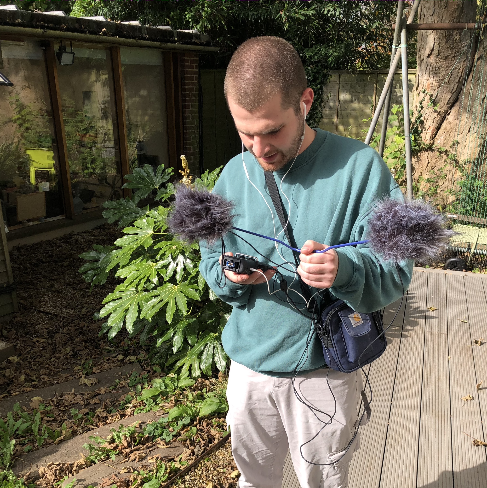

Jeremy Segal is a musician, sound artist, and audio engineer from Perth, Western Australia, now living in Berlin. His work includes electronic and electroacoustic music, sound installation, radio, and indie-rock bands.
Jeremy grew up playing guitar, forming his first bands during indie-rock’s last hurrah and a psychedelic revival. He began recording and mixing his own music in his late teens, culminating in three EPs and an album with dream-pop project Segue (fka Segue Safari) in his early twenties. Since 2017 he has played bass in art-rock band Didion’s Bible, and in 2023 he formed Brix with close friends Daniel Veneklaas, Jameson Feakes, and Thomas Freeman.
Jeremy first ventured into electronic and electro-acoustic music in 2020 with Four Footprints, a collection of ambient pieces exploring environmental sound as a basis for compositional process. In 2021 he released Plateaux, an album of electronic music dealing primarily with sonic transformation and gradual process. In 2022 he worked extensively with vocal sound material and algorithmic composition, first with Voice Rhythm AM Drone, presented in 6.1 surround at Callaway Auditorium, and then with Speak… Ah, a quadraphonic text-to-speech piece commissioned by Tone List for their Audible Edge Festival of Sound. In 2023, with support from Tone List and Perth Jazz Society, he formed an electroacoustic improvisation trio with Naoko Uemoto and Josiah Padmanabham.
Jeremy has recorded and mixed music in professional studios, domestic spaces, and live performance venues. He enjoys capturing sound in unconventional situations, and often collaborates with artists and bands who produce their own work. He has worked on audiobooks and live performance videos, and teaches music and sound production to students of all ages.
Jeremy studied music and literature at the University of Western Australia, and is currently studying Sound Studies and Sonic Arts at Universität der Künste Berlin.
contact: jeremy[dot]s[dot]segal@gmail.com